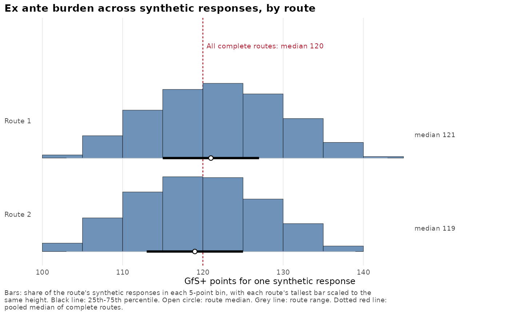

Plot the ex ante burden distribution of each route
Source:R/plot_burden_profile.R
plot_burden_profile.RdDraws, for each route through the survey, the distribution of burden across
the synthetic responses of path_burden_profile(): every modelled
combination of display conditions, weighted as in the profile. One row per
route. Bars are the share of the route's synthetic responses in each bin of
GfS+ points, each bin outlined in black. Every route's tallest bar is drawn
at the same height, so the shape of each route can be read, but bar heights
are not comparable between routes. The thick black line spans the 25th to
75th percentile, the open circle is the route median and the thin grey line
is the route range. The dotted red vertical line is the pooled median of
the complete routes, with routes equally weighted, which is the median
burden_report() reports in $burden. The right-hand label gives each
route's median.
Usage
plot_burden_profile(
x,
include_screenouts = FALSE,
max_routes = 20L,
labels = NULL,
binwidth = NULL
)Arguments
- x
A
path_burden_profile()result, or aburden_report()object built withprofile = TRUE(it keeps the profile it computed).- include_screenouts
If
FALSE(default) only complete routes are drawn. IfTRUE, routes that end early (screen-outs) are drawn too, in grey and labelled "Ending early k". The pooled median line always uses complete routes only, asburden_report()does.- max_routes
Most routes to draw (default 20). Beyond this, a pooled row and an evenly spaced selection of routes are shown (see Details). Use
Infto draw every route.- labels
Optional route labels: a character vector named by
path_id, or an unnamed vector with one label per row ofx. Routes without a label get the numbered labels described in Details.- binwidth
Width of the histogram bins in GfS+ points.
NULL(default) uses 10 points, or less when the overall range is under 100 points.
Value
A ggplot object (not printed). Its data has one row per drawn
route, with path_id, label, early and the summary statistics.
Requires the ggplot2 package.
Details
These are model-weighted distributions over synthetic responses, not
distributions over respondents (see path_burden_profile()). A route whose
display logic cannot change its burden has one value. It is drawn as a
filled dot with no histogram, and the footer note says so.
Route labels. Complete routes are numbered 1 to n in path_id order and
labelled "Route 1", "Route 2", and so on. Routes that end early (when
include_screenouts = TRUE) are numbered separately and labelled "Ending
early 1", and so on. The number in a label is therefore not the path_id
in report$paths, which also counts routes that end early. To match them,
use the plot data (plot_burden_profile(x)$data). It has one row per drawn
route, with its label and its original path_id (NA for the pooled row).
The numbering covers all complete routes, so it does not change when
max_routes shows only some of them.
With more than max_routes routes the plot cannot show every route
legibly. It then shows the pooled distribution of all routes in the top row
and max_routes routes spread evenly across the ordering of route medians
(so the lightest and heaviest are both included), and says so in a message.
If no route is complete, the routes that end early are drawn instead, with a message, and the pooled median line is left out.
Examples
# \donttest{
if (requireNamespace("ggplot2", quietly = TRUE)) {
qsf_path <- system.file("extdata", "demo_travel_survey.qsf",
package = "surveyBurden")
pbp <- path_burden_profile(read_qsf(qsf_path))
plot_burden_profile(pbp)
}

# }